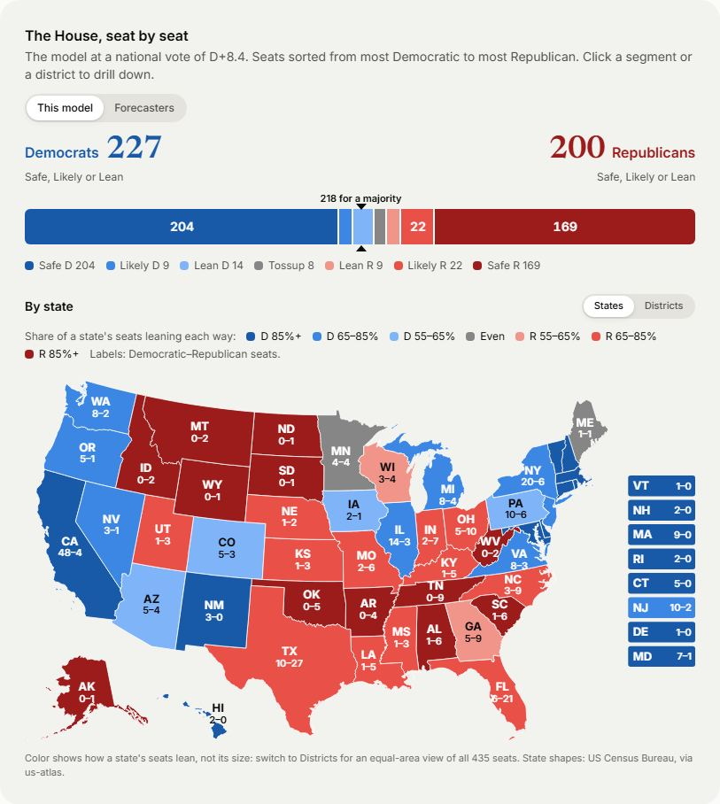
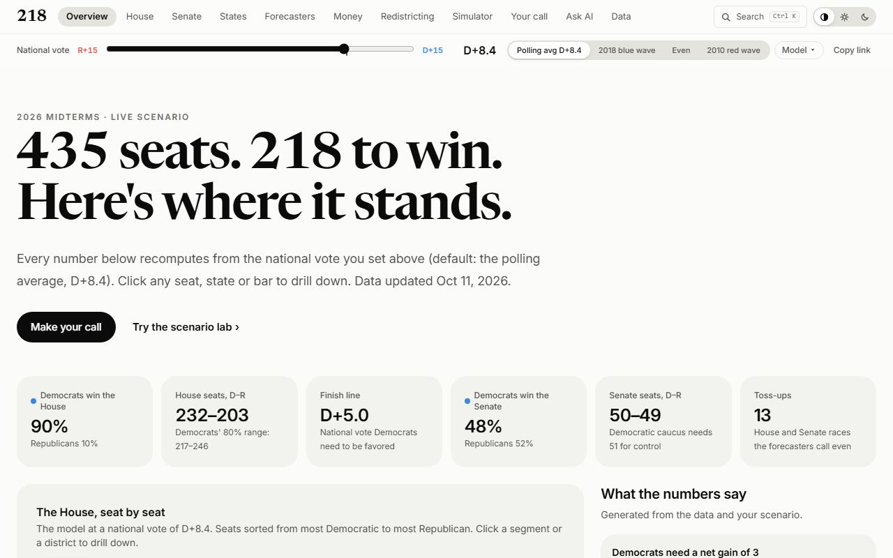
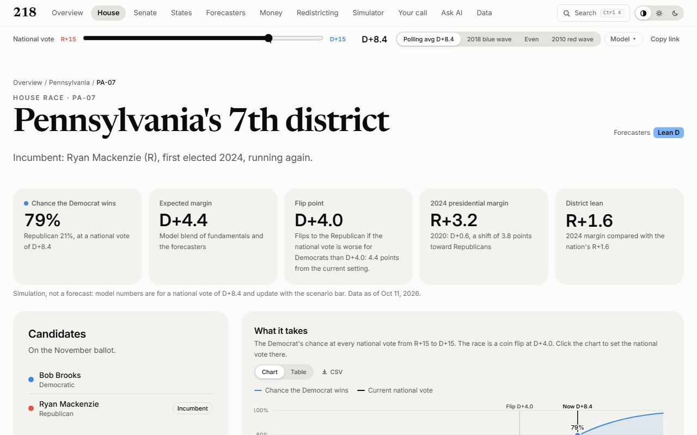
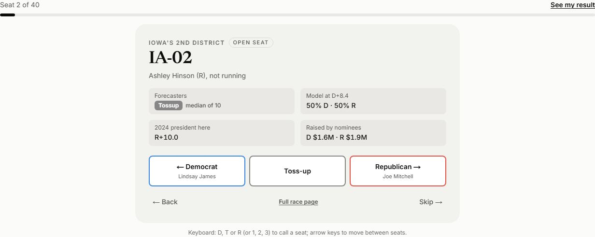
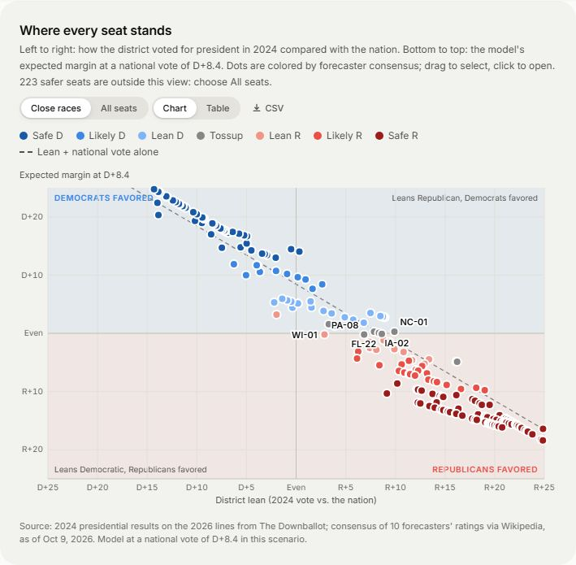
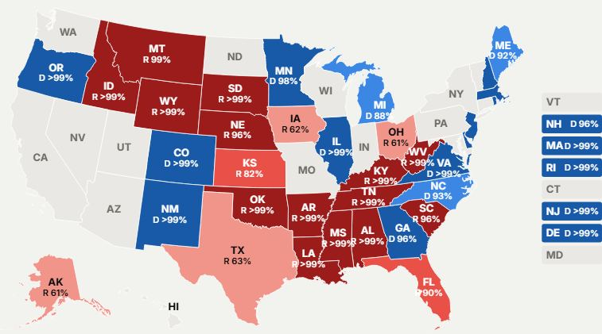
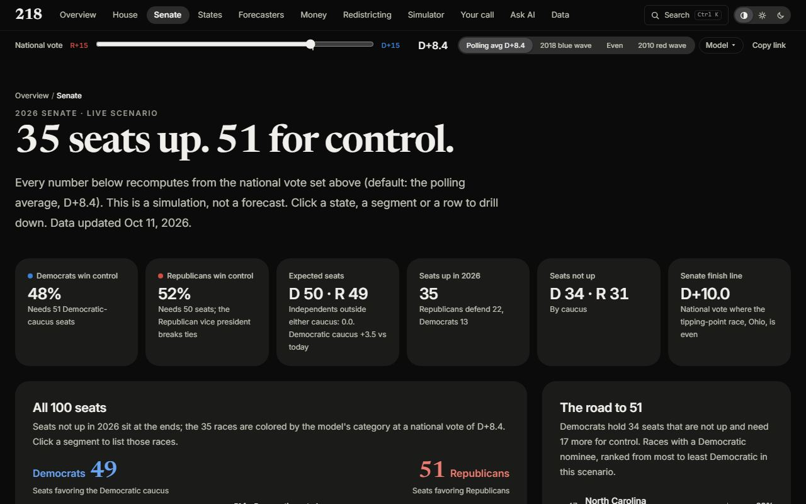

Seat bar and maps
A 270toWin-style seat bar with counts in every segment and the 218 line, a geographic state map labeled with each delegation's split, and an equal-area district map where every seat is the same size.
A nonpartisan, interactive simulator for the 2026 US midterms. Move the national vote and watch control of the House and Senate change, race by race. It is a simulation, not a forecast.

Nine states (AL, CA, FL, LA, NC, OH, TN, TX, UT) vote on new House maps in 2026, so the last election is the wrong baseline. 218 measures every district on its 2026 lines, gathers ten forecasters' ratings and the money in one place, and lets anyone ask "what if the country leans a little further one way?"

A 270toWin-style seat bar with counts in every segment and the 218 line, a geographic state map labeled with each delegation's split, and an equal-area district map where every seat is the same size.

435 House and 35 Senate pages: the chance in your scenario, the flip point, district lean, every forecaster's rating, FEC money and outside spending, and the state around it.

Call the 40 closest seats as Democrat, Toss-up or Republican, see who reaches 218, and share it as a link or a generated image (link preview and 9:16 story).

Filter all 435 seats, then read "Where every seat stands": lean against expected margin, favored zones, crossover seats, and a reference line that shows what incumbency and the forecasters add.

A geographic map of the 35 races with each favored side's chance, all 100 seats on one bar, and the tipping-point state where control is decided.

Sliding segmented controls, numbers that roll to new values, bars that glide, sections that rise into view, a real dark mode, and every chart readable at 360px.
Built in conversation with Claude Code (Claude Opus 5.5) as the engineer. The human set the direction, priorities and visual bar in plain English; the agent planned, wrote the code and tests, and proved each change in a real browser before asking to push.
"Build the next feature", "make it feel like Apple", "this map can look better".
The agent reads PLAN.md, CLAUDE.md, the framework's own docs and the existing code first.
Pure logic gets unit tests; risky flows get fakes (a local stand-in for the Batches API).
Lint, type check, tests and a production build, then a headless browser across every main route at 360px and 1280px, light and dark, with screenshots reviewed.
Every push deploys to Vercel. Skills (claude-api, an apple-design skill installed from GitHub) and project memory carry knowledge between sessions.
Each race's expected margin blends fundamentals (district lean + national vote + incumbency) with the median forecaster rating. Uncertainty has a shared national error and a race error, and seat counts are computed exactly rather than by random sampling, so the same link always shows the same numbers.
Code computes every number; AI only writes sentences. Ask 218 answers through strict lookup tools. Race summaries are written in advance with the Message Batches API and published only if every number matches the data, a grader finds them neutral, a party-swap test passes, and a person approves the close races.
Same templates and words for both parties, no loaded adjectives, "simulation, not a forecast" on every result, and voting questions sent to vote.gov.
A person's picks live only in their own link. Analytics count actions, never choices: no cookies, no profiles, every URL cut to its path before sending.
Works at 360px and by keyboard, a table view behind every chart, labels as well as color, dark mode, and reduced-motion alternatives for every animation.
| Data | Source |
|---|---|
| 2024 presidential results on the 2026 district lines | The Downballot |
| Equal-area district map | Congressional District Hexmap by Daniel Donner for The Downballot (CC BY 4.0) |
| Candidates, incumbents, ratings from 10 forecasters, polling averages | Wikipedia, compiled from the named forecasters and aggregators |
| Fundraising and outside spending | Federal Election Commission bulk data |
| State shapes for the geographic maps | US Census Bureau, via us-atlas |
Everything above: the scenario, maps, 470 race pages, Make your call with share images, Senate, money, redistricting, forecasters, the scenario lab, downloads and methodology.
Ask 218 and the AI race summaries need an Anthropic API key on the deployment; analytics needs a PostHog key; the nightly refresh runs from GitHub Actions.
Find my district (address or location to a 2026 district, in progress), past House results, then an Election Night mode and a "how did your call do?" scorecard.